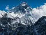

Nicknamed the "Savage Mountain" due to its challenging climbing conditions, K2 is the second-tallest mountain in the world and lies on the border between Pakistan and China. It is part of the Karakoram mountain range.
Nicknamed the "Savage Mountain" due to its challenging climbing conditions, K2 is the second-tallest mountain in the world and lies on the border between Pakistan and China. It is part of the Karakoram mountain range.
Mountains are prominent landforms that have significant heights above sea level and/or the surrounding land. They are steeper than hills. A mountain or mountain range usually has a peak, which is a pointed top. Mountains have different climates than land at sea level and nearby flat land.
The top 5 mountains in the world, based on height, are all located in Asia:
 The tallest mountain in the world, straddling the border between Nepal and China. It is part of the Mahalangur Himal sub-range of the Himalayas.
Nicknamed the "Savage Mountain" due to its challenging climbing conditions, K2 is the second-tallest mountain in the world and lies on the border between Pakistan and China. It is part of the Karakoram mountain range.
 The third-highest mountain in the world, Kangchenjunga is located on the border between Nepal and India. Its name translates to "The Five Treasures of Snow" in Tibetan.
The third-highest mountain in the world, Kangchenjunga is located on the border between Nepal and India. Its name translates to "The Five Treasures of Snow" in Tibetan.
 The fourth-highest mountain in the world, Lhotse is located on the border between Nepal and China. It is part of the Mahalangur Himal sub-range of the Himalayas and is connected to Mount Everest by the South Col.
The fourth-highest mountain in the world, Lhotse is located on the border between Nepal and China. It is part of the Mahalangur Himal sub-range of the Himalayas and is connected to Mount Everest by the South Col.
 The fifth-highest mountain in the world, Makalu is located on the border between Nepal and China. Its name translates to "Great Black" in Sanskrit.
The fifth-highest mountain in the world, Makalu is located on the border between Nepal and China. Its name translates to "Great Black" in Sanskrit.